Установка
Установите SQL Server 2017 Express
Ссылка на официальный сайт: https://www.microsoft.com/ru-ru/sql-server/sql-server-downloads
Установите SQL Server Management Studio (SSMS)
Ссылка на официальный сайт: https://docs.microsoft.com/ru-ru/sql/ssms/download-sql-server-management-studio-ssms?view=sql-server-2017
Прямая ссулка на скачиваение: SQL Server Management Studio 17.9
Авторизация
После установки запустите SQL Server Management Studio (SSMS)
Выберите сервер в поле "Имя сервера", для этого в списке выберите <Продолжить обзор>
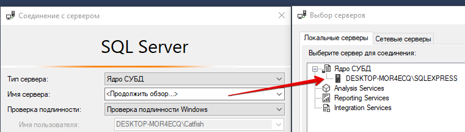
Первый вход выполняется под учетной записью пользователя Windows
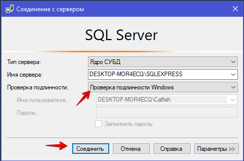
В папке "Безопасность" раздел "Имена для входа" необходимо включить имя sa
Дважды нажмите на sa
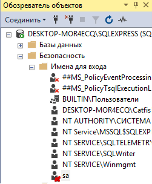
Укажите пароль
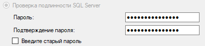
Включите флаг
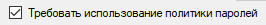
Перейдите в состояние и включите данную учетную запись
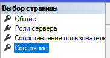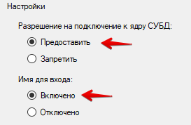
Нажмите ОК
Откройте Свойства сервера 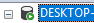 через контекстное меню
Перейдите в раздел безопасность и выберите проверка подлинности SQL Server и Windows
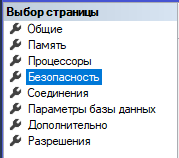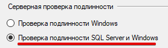
Перезапустите сервер (откройте контекстное меню на сервере и выберите "перезапустить")
При следующем входе в SQL Server Management Studio (SSMS) выберите проверку подленности SQL Server введите имя sa и пароль
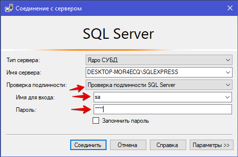
Created with the Personal Edition of HelpNDoc: Easily create PDF Help documents